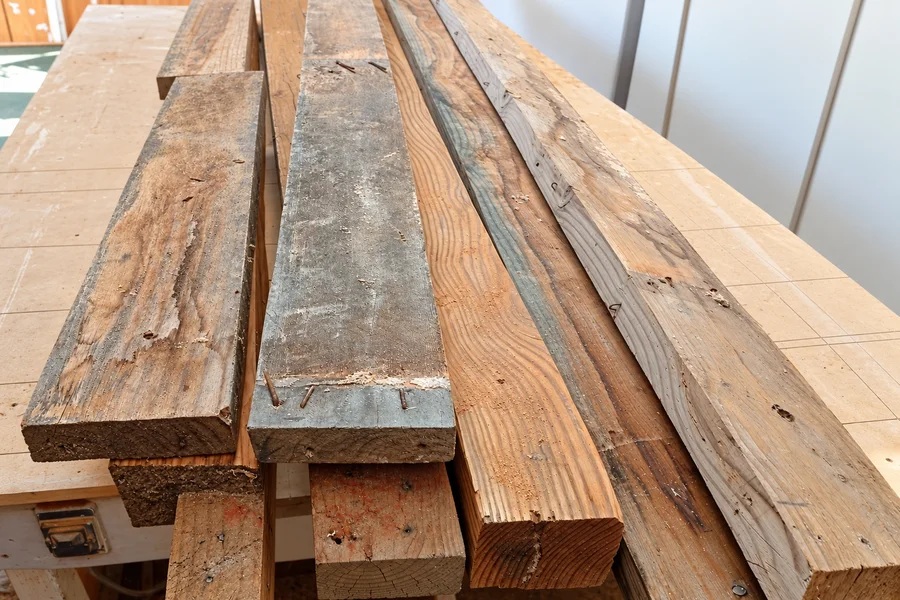

DISEÑO Y FABRICACIÓN A MEDIDA
Madera que
da forma a
tus ideas.
Ese mueble que imaginas, hecho para tu espacio. Creamos piezas para tu hogar, tu emprendimiento y los momentos que importan.
Copiapó, Región de Atacama
UNA CREACIÓN, MUCHAS POSIBILIDADES
CREACIONES QUE YA SON PARTE DE UNA HISTORIA
Las ideas se vuelven
cosas de verdad.
Explora algunos de nuestros trabajos. Encuentra una idea que te inspire y conversemos sobre cómo hacerla tuya.
Cada proyecto se cotiza según sus medidas, materiales y terminaciones.
¿QUÉ TIENES EN MENTE?
Un oficio.
Muchas posibilidades.
Desde ese rincón de tu casa hasta el próximo paso de tu negocio. El punto de partida siempre es tu idea.
Para vivirlo todos los días
Cocinas, clósets, cómodas, tocadores, mesas y soluciones para ordenar.
HogarPara imaginar en grande
Camas tipi, casita Montessori y temáticas; camarotes, tocadores, mesas y juguetes.
InfantilPara hacer crecer tu idea
Carros de exhibición, recepciones, barras de servicio, letras y estructuras para eventos.
NegociosPara volver a darle vida
Renovación de veladores y sillas, además de creaciones con madera reutilizada.
Restauración
DETRÁS DE CADA CREACIÓN
Se nota cuando
está hecho
con dedicación.
RREM es el trabajo de Rody Villalobos: escuchar una idea, encontrar la manera de hacerla y cuidar los detalles hasta convertirla en un mueble.
En Copiapó creamos proyectos por encargo para familias, emprendedores e instituciones. También restauramos piezas y damos nuevas posibilidades a la madera que todavía tiene mucho por contar.
Distintos proyectos.
La misma dedicación.
Conoce más de nuestro trabajo La misma dedicación.
Quedó espectacular…
100% recomendado.
DEL PRIMER MENSAJE A TU PROYECTO
Todo comienza
con una conversación.
No necesitas tener todo resuelto. Una foto de referencia, las medidas de tu espacio o una idea son un buen comienzo.
- 01
Cuéntanos tu idea
Elige un proyecto o describe lo que necesitas. Puedes compartir tus referencias por WhatsApp.
- 02
Definimos los detalles
Conversamos sobre medidas, uso, materiales, terminaciones y lugar de entrega.
- 03
Recibe tu cotización
Confirmamos contigo el valor y el plazo según el proyecto, antes de comenzar.
HAGAMOS ESPACIO PARA TU IDEA
¿Y si ese mueble
que imaginas
empieza hoy?
Prepara tu consulta en unos pasos. Al terminar, abre WhatsApp y conversemos directamente sobre tu proyecto.
¿Prefieres escribir directamente?+56 9 3377 7245 Hecho en Copiapó, para tu espacio.
Paso 1 de 3
Tu próximo proyecto
ANTES DE EMPEZAR
Buenas preguntas.
Respuestas claras.
¿Puedo pedir un diseño diferente a los de la galería?
Sí. Los proyectos se realizan por encargo. Envíanos una referencia o cuéntanos tu idea para evaluar medidas, materiales y posibilidades de fabricación.
¿Qué necesito para cotizar?
El tipo de mueble, una descripción de lo que necesitas y tu ciudad. Si tienes medidas aproximadas, fotos del espacio o una referencia, compártelas por WhatsApp.
¿Cuánto cuesta y cuánto demora?
El valor y el plazo dependen de las medidas, materiales, terminaciones y complejidad. Los confirmamos contigo al revisar tu proyecto.
¿Los proyectos de la galería están disponibles para entrega inmediata?
La galería muestra trabajos realizados. Si te interesa uno similar, consulta las opciones de fabricación, las adaptaciones y el plazo disponible.
¿Dónde trabajan y cómo coordinamos la entrega?
Estamos en Copiapó, Región de Atacama. Indícanos tu ciudad o comuna para confirmar contigo las posibilidades y condiciones de entrega.
¿Pueden restaurar un mueble que ya tengo?
Podemos evaluar tu caso. Envíanos fotografías del mueble, sus medidas y qué te gustaría cambiar para revisar su estado y las alternativas de restauración.